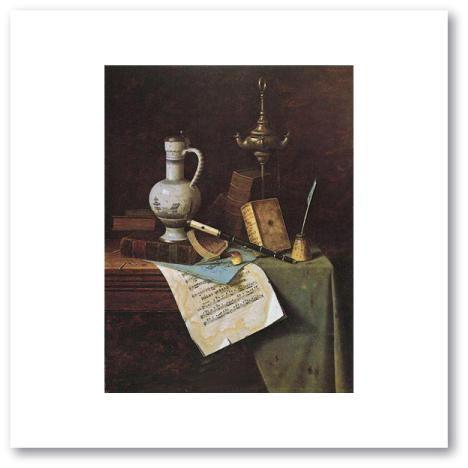
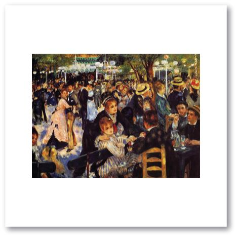
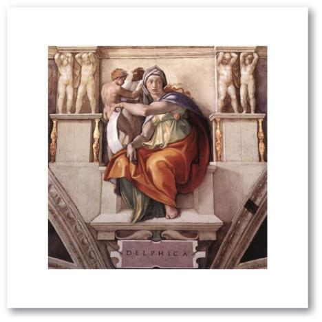
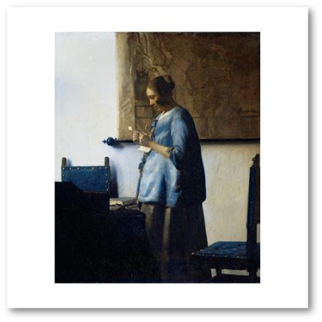
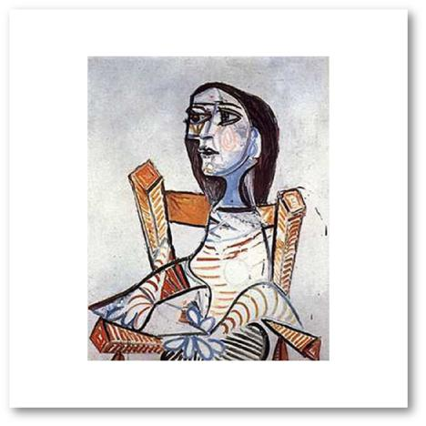

Music: “To a Wild Rose” by Edward MacDowell, listen to it here
Art: “My Gems” by William Harnett

Music: “The Blue Danube” by Johann Strauss Jr, listen to it here
Art: “Moulin de la Galette” by Auguste Renoir

Music: “Gregorian Chants” compiled by Pope Gregory, listen to an example here
Art: “The Delphic Sibyl” in the Sistine Chapel by Michelangelo Buonarroti

Music: “St. Louis Blues” by W.C. Handy, listen to it here
Art: “Marilyn Monroe” by Andy Warhol
Music: “The Four Seasons: Spring” by Antonio Vivaldi, listen to it here
Art: “Woman in Blue” by Jan Vermeer

Music: “Ritual Fire Dance” from El Amor Brujo by Manuel de Falla, listen to it here
Art: “Portrait of a Woman” by Pablo Picasso

The links to the music may or may not work. We do not take any responsibility for the content of the linked web pages. Please be aware that comments on YouTube™ are outside our control.